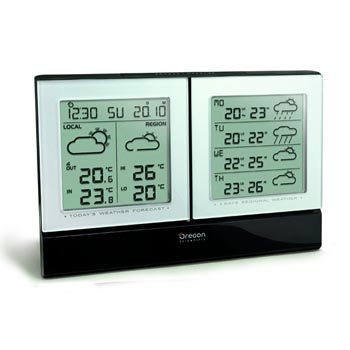
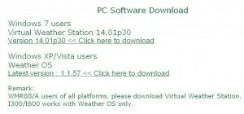
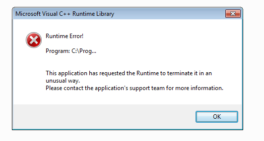
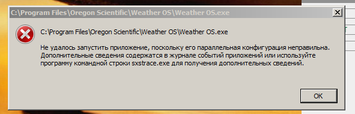

Пришла в конце прошлой неделе заказанная на Озоне метеостанция Oregon I600. Желание узнавать температуру на улице и влажность дома пересилило желание иметь 4000 рублей и метеостанция была куплена.

От метеостанции подешевле эту отличает возможность связываться с компьютером и получать из интернета прогноз погоды на 4 дня вперед, чему и отдан весь правый экран.
Метеостанция была распакована, внешний датчик заряжен батарейками, станция включена. Бип-бип. Температура за бортом высветилась на экране монитора. Осталось подключить ее к компьютеру.
Изначально была задумка, чтобы метеостанция будет постоянно подключена к установленному в локальной домашней сети сетевому хранилищу Synology ds110j. Но выяснилось, что станция сама в интернет не ходит, что не удивительно, а для работы ей нужен установленный софт, который, к сожалению только под Windows.
Иду в интернет, качаю дистрибутив с Weather OS (так и называется. Ни много ни мало)

Устанавливаю софт. Клик-клац. Запускаю

Не выходит. Операционная система Windows 7 Pro 64 bit. Софт для Oregon I600 не работает. Правый экран погоду не показывает. Гугл говорит что можно попробовать установить Microsoft Visual C++ 2010 Redistributable Package. Пробую. Безрезультатно.
К счастью есть еще один вариант с установкой софта на нетбук. Вариант не очень хороший, потому что цеплять к нетбуку каждый раз USB хаб для синхронизации не очень эргономично, но попытка не пытка.
Инсталлирую.

Попытка засчитана, но неудачна.
То есть на данный момент я потратив 4000 рублей имею функционал самой дешевой метеостанции рублей за 900 и расстроенный вид.
Сегодня с утра написал письмо в представительство Oregon в России. В Озон письмо уйти не смогло. Позвонил по телефону. Девушка Мария выслушала, обещала передать заявку специалисту, взяла номер телефона.
UPD: Позвонил с Озона Илья, сказал возвращайте. По приходу товара, зачислим деньги на лицевой счет, а потом вернем на карту.